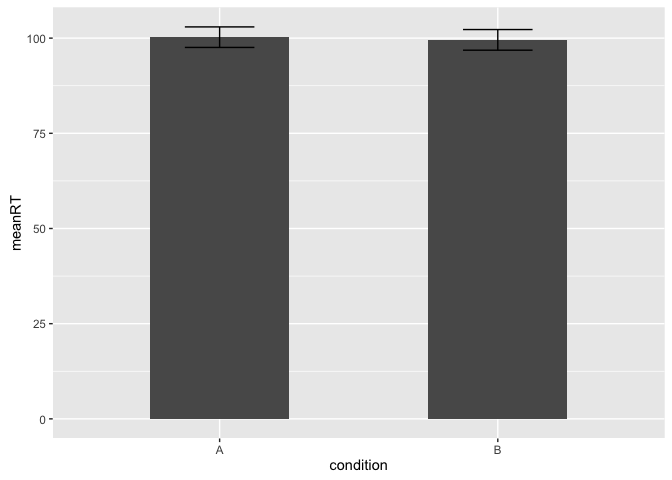

Data Visualization with ggplot2
ggplot2 is a package for plotting data. The "gg" stands for "grammar
of graphics". To use ggplot2, first you must load the package (after
installing).
library(ggplot2)
##
## Attaching package: 'ggplot2'
##
## The following objects are masked from 'package:psych':
##
## %+%, alpha
The code for creating a plot using ggplot is more complicated than using
boxplot() or hist(). Here's an example that we'll walk through step
by step:
# We're going to use the 'describe' function from the psych package, so first load it:
library(psych)
# Let's create a random data set with 50 observations of reaction time in two conditions.
mydata <- data.frame(id = seq(1:50), # create a column named "id" with the numbers (sequence) 1 through 50
condition = rep(c("A", "B"), 25), # create a "condition" column with A and B repeating
rt = rnorm(n = 50, mean = 100, sd = 15)) # create a third column named "rt" with randomly generated data
# Now, get the mean and standard error for each condition
mydata.summary <- describeBy(mydata, "condition")
mydata.summary
## group: A
## vars n mean sd median trimmed mad min max range
## id 1 25 25.00 14.72 25.0 25.00 17.79 1.00 49.00 48.00
## condition* 2 25 1.00 0.00 1.0 1.00 0.00 1.00 1.00 0.00
## rt 3 25 100.25 13.48 100.4 100.28 12.13 70.92 131.17 60.25
## skew kurtosis se
## id 0.00 -1.34 2.94
## condition* NaN NaN 0.00
## rt 0.03 -0.26 2.70
## --------------------------------------------------------
## group: B
## vars n mean sd median trimmed mad min max range
## id 1 25 26.00 14.72 26.00 26.00 17.79 2.00 50.00 48.00
## condition* 2 25 2.00 0.00 2.00 2.00 0.00 2.00 2.00 0.00
## rt 3 25 99.54 13.56 101.84 100.35 11.91 59.77 126.83 67.07
## skew kurtosis se
## id 0.00 -1.34 2.94
## condition* NaN NaN 0.00
## rt -0.74 1.11 2.71
mydata.plot <- data.frame(condition = factor(c("A", "B")),
meanRT = c(mydata.summary[[1]]$mean[3], mydata.summary[[2]]$mean[3]),
se = c(mydata.summary[[1]]$se[3], mydata.summary[[2]]$se[3]))
ggplot(mydata.plot, aes(x = condition, y = meanRT)) +
geom_bar(stat= "identity", width = .5) +
geom_errorbar(aes(ymin = meanRT - se, ymax = meanRT + se), width = .25)

Let's go through the code step by step.
First, we load the psych package and create our data.frame.
# We're going to use the 'describe' function from the psych package, so first load it:
library(psych)
# Let's create a random data set with 50 observations of reaction time in two conditions.
mydata <- data.frame(id = seq(1:50), # create a column named "id" with the numbers (sequence) 1 through 50
condition = rep(c("A", "B"), 25), # create a "condition" column with A and B repeating
rt = rnorm(n = 50, mean = 100, sd = 15)) # create a third column named "rt" with randomly generated data
Then, we must calculate the mean reaction time and standard error of reaction time for each condition.
mydata.summary <- describeBy(mydata, "condition")
mydata.summary
## group: A
## vars n mean sd median trimmed mad min max range
## id 1 25 25.00 14.72 25.0 25.00 17.79 1.00 49.00 48.00
## condition* 2 25 1.00 0.00 1.0 1.00 0.00 1.00 1.00 0.00
## rt 3 25 100.25 13.48 100.4 100.28 12.13 70.92 131.17 60.25
## skew kurtosis se
## id 0.00 -1.34 2.94
## condition* NaN NaN 0.00
## rt 0.03 -0.26 2.70
## --------------------------------------------------------
## group: B
## vars n mean sd median trimmed mad min max range
## id 1 25 26.00 14.72 26.00 26.00 17.79 2.00 50.00 48.00
## condition* 2 25 2.00 0.00 2.00 2.00 0.00 2.00 2.00 0.00
## rt 3 25 99.54 13.56 101.84 100.35 11.91 59.77 126.83 67.07
## skew kurtosis se
## id 0.00 -1.34 2.94
## condition* NaN NaN 0.00
## rt -0.74 1.11 2.71
The describeBy function calculates a bunch of summary statistics for
our data.frame, and does it separately for each condition. The result is
two tables, one for each condition.
We need to store the mean and standard error for the reaction time data in each condition. That's what the next 3 lines of code do:
mydata.plot <- data.frame(
We're going to store what we need in a data.frame called "mydata.plot"
condition = factor(c("A", "B")),
The first column lists the two conditions, A and B. (Our data.frame will have 2 rows.)
meanRT = c(mydata.summary[[1]]$mean[3], mydata.summary[[2]]$mean[3]),
We're combining two things and storing them in a column named "meanRT". What do all of those brackets and numbers mean?
The mydata.summary object, which was created by the describeBy function, is a special type of class called a List. Lists are like vectors, only instead of each element storing a single value, you can store many objects in a list - for example, more than one data.frame.
Just like with vectors, we can index lists using brackets:
mydata.summary[1]
## $A
## vars n mean sd median trimmed mad min max range
## id 1 25 25.00 14.72 25.0 25.00 17.79 1.00 49.00 48.00
## condition* 2 25 1.00 0.00 1.0 1.00 0.00 1.00 1.00 0.00
## rt 3 25 100.25 13.48 100.4 100.28 12.13 70.92 131.17 60.25
## skew kurtosis se
## id 0.00 -1.34 2.94
## condition* NaN NaN 0.00
## rt 0.03 -0.26 2.70
class(mydata.summary[1])
## [1] "list"
Using a single set of brackets will let us select the first item in the list, but it's still of the class 'list'. It would be great if we could treat that table as a data.frame, so that we can work with it using the other things we know. That's exactly what the double set of brackets does:
mydata.summary[[1]]
## vars n mean sd median trimmed mad min max range
## id 1 25 25.00 14.72 25.0 25.00 17.79 1.00 49.00 48.00
## condition* 2 25 1.00 0.00 1.0 1.00 0.00 1.00 1.00 0.00
## rt 3 25 100.25 13.48 100.4 100.28 12.13 70.92 131.17 60.25
## skew kurtosis se
## id 0.00 -1.34 2.94
## condition* NaN NaN 0.00
## rt 0.03 -0.26 2.70
class(mydata.summary[[1]])
## [1] "psych" "describe" "data.frame"
You'll see that the resulting object has three classes - "psych", "describe", and most useful for us, "data.frame". Now, we can use the $ symbol to select a column by name.
mydata.summary[[1]]$mean
## [1] 25.0000 1.0000 100.2517
This selects the column of means for condition A. We're interested in only the mean reaction time, so we can again use brackets to select the third element:
mydata.summary[[1]]$mean[3]
## [1] 100.2517
This code says to select the third element of the column named "mean" of the content of the first item in the list "mydata.summary".
Now, we can change the 1 to a 2 to select the mean reaction time for
condition B, and combine them using c().
c(mydata.summary[[1]]$mean[3], mydata.summary[[2]]$mean[3])
## [1] 100.25170 99.54173
We store the result in a column of our new data.frame named "meanRT". We can do the exact same thing to select the standard error (se) of reaction time for each condition:
se = c(mydata.summary[[1]]$se[3], mydata.summary[[2]]$se[3]))
We end up with a data.frame that has two rows and three columns:
mydata.plot
## condition meanRT se
## 1 A 100.25170 2.696155
## 2 B 99.54173 2.712388
Now let's break down the ggplot code:
ggplot(mydata.plot, aes(x = condition, y = meanRT)) +
The ggplot() function creates an object of the class "ggplot". Here,
we give it two arguments. The first tells it the name of our data.frame
(mydata.plot), and the second tells it how to arrange the data on the x
and y axes. We want two columns representing our conditions arranged
along the x-axis, and the height of the bars to correspond to the mean
reaction time in each condition. We use aes() to indicate this (it
stands for aesthetic mapping).
We've created a ggplot object with condition on the x-axis and mean reaction time in the y-axis, but we haven't specified what type of plot we want - a bar plot? Line plot? Something else? So, we add more to the ggplot object with the plus sign.
geom_bar(stat= "identity", width = .5) +
geom_bar() indicates that we want a bar plot. We provide two
arguments: stat = "identity" indicates that the height of the bars
should be exactly what's in the meanRT column, and width = .5 sets the
width of the bars to 50% of the default width.
geom_errorbar(aes(ymin = meanRT - se, ymax = meanRT + se), width = .25)
And finally, we add another line to add errorbars to the plot using the
geom_errorbar() function. Importantly, we need to specify how wide the
bars should be using the aes() argument. Inside aes(), we set the
minimum y-value for the bars to be the mean minus the standard error
(meanRT - se), and the maximum y-value to be the mean plus the standard
error (meanRT + se). We can also set the width using another argument.
ggplot2 can make many other complex visualizations. You can read more
about how to use it at http://docs.ggplot2.org/current/